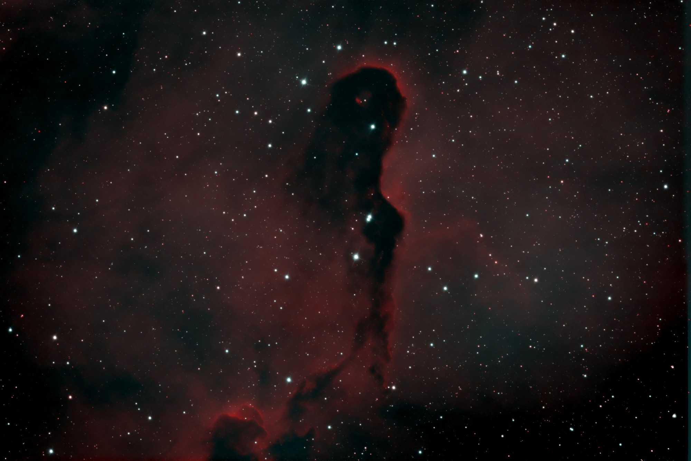

A night on the Elephant Trunk, stacked and denoised without a human in the loop and delivered to a phone as a push notification before breakfast. The picture's most striking feature is the thing that is not there: a black channel winding down the middle of a red field, with stars showing through it. That darkness is not missing data and not a failure of the processing. It is a cloud of dust, thick enough to block the nebula behind it, and it can be shown to be real by measurement rather than by eye — the dark region reads below the surrounding sky, which nothing but absorption can do.

The Elephant Trunk is a cometary globule — a dense knot of dust and molecular gas, compressed and sculpted by the ultraviolet light of a hot star outside this frame. It sits in front of the wider IC 1396 emission region. So the arrangement is layered: hydrogen glowing across the background, an opaque cloud between it and the telescope, and the cloud's silhouette is what the camera records. The picture is not showing a hole in the nebula. It is showing a shadow.
Dust does this because it is very good at stopping starlight. Grains a fraction of a micron across absorb and scatter optical photons far out of proportion to their mass, so a cloud that is diffuse by any terrestrial standard is functionally solid at these wavelengths. What gets through is what was never behind the cloud in the first place.
A black region in an astronomical image is exactly the kind of feature that ought to be distrusted, because there are several dull ways to manufacture one. A stretch whose black point is set too high will clip faint signal to nothing. A denoiser that is over-suppressing will flatten low-signal regions toward zero. Both would produce something that looks like this, and neither would be the sky.
The discriminator is the sign. Clipping and over-suppression can drive a region down to the sky level; neither can push it below. Absorption can, because a cloud in the foreground removes light that the surrounding sky still delivers. Measured on the raw stacks against a single global sky value — no two-dimensional background model, so nothing in the fitting could absorb the nebula — the darkest tiles come out at −2.74 ADU in Hα and −2.00 ADU in O III, against sky levels of 4.26 and 2.62. Averaged over a 128-pixel tile the noise on that measurement is 0.012 ADU, which puts the deficit at more than 200 standard deviations. It is not noise, and it is not the floor of the stretch.
A second, independent check comes free with narrowband. The two filters were stacked separately, from different frames, and they darken by similar amounts in the same places — Hα by 1.75 σ and O III by 1.62 σ relative to their own skies, over the same span of the frame. Extinction by dust is broadly achromatic across two lines this close together, so that agreement is what the physics predicts. A processing fault would have no reason to land in the same place, at the same depth, in two channels that never saw each other.
The stars scattered across the dark lane are consistent with the same picture rather than a contradiction of it. Most of them lie in front of the globule, between it and the telescope, so nothing dims them; a few are background stars seen through thinner material at the cloud's edges. In the darkest tiles the globule is removing roughly 60% of the Hα signal that reaches the sky around it, which is why it renders as flat black once stretched.
The image was produced by the observatory's Noise2Noise model, which is trained without any clean reference at all: it learns from pairs of independent stacks of the same field, where the only difference between the two is the noise. This particular model was pooled across Hα and O III and trained on a different object entirely — it had never seen the Elephant Trunk. It is applied once, after stacking rather than to each frame, which costs about eleven seconds per channel and cannot launder a shared bias into an apparently converging result.
The standing rule for this series applies here too, and it is not a formality. The denoised frame preserves source flux to within a few percent — measured on this field at 104–117% across every brightness level, faintest included — but "within a few percent" is not good enough to measure with. The denoised image is for looking at. Every number quoted above, including the depth of the shadow, was taken from the calibrated linear stacks, never from the picture.
The whole sequence runs unattended. A scheduled job each morning finds the targets that gained frames overnight, builds a shared reference, stacks each filter onto it, applies the quality gate, denoises, composes the colour image, and writes the products alongside the night's data. The finished denoised composite is then sent straight to a phone as a push notification, captioned with how many frames each filter contributed and how many survived the gate — on this night, 14 of 20 in Hα and 21 of 26 in O III. The first look at the Elephant Trunk was on a phone screen, several hours after the roof had already closed.
One caveat worth recording, because it nearly produced a wrong conclusion. The morning's first automatic render set its black point as a percentile of the image's own pixel distribution. On a denoised frame that rule misfires: removing the noise narrows the distribution, so the same percentile lands at a different brightness, and the black point ended up sitting inside the noise. Faint nebulosity that survives in the raw frame — where random scatter lifts sky pixels above the cut — fell below it once the scatter was gone, and the denoiser appeared to have eaten the outer nebula. It had not; the flux was measurably still there. The fix was to anchor the black point to the measured sky rather than to a percentile. The lesson is the usual one in this work: a processing choice that is harmless on a noisy image can become destructive on a clean one, and the failure looks exactly like a discovery.